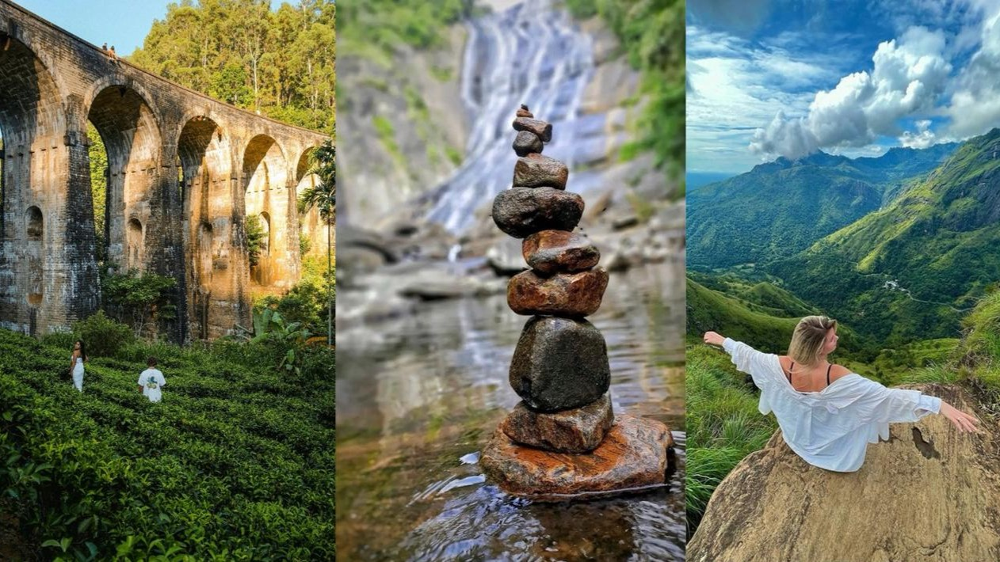

Ella is a beautiful hill town in Sri Lanka’s central highlands, surrounded by tea plantations, misty mountains, and cool fresh air. It’s famous for Ella Rock, Little Adam’s Peak, and the Nine Arch Bridge, offering stunning views, hiking adventures, and unforgettable experiences.
Driest and most pleasant. Ideal for hiking and clear viewpoints.
Warm and largely dry with fewer crowds.
Warmer days with occasional showers. Still a great time to visit.
Heavier rains. Waterfalls are at their fullest and most beautiful.